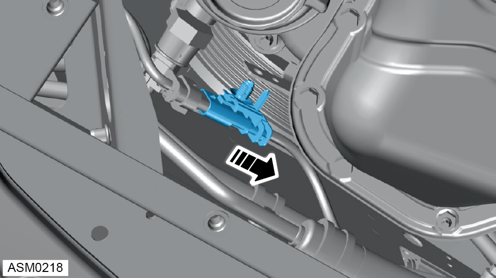

Downpipe - V6
Print
Operation Code: 45.01.01-02
Removal
- Remove rear undertray. Refer to procedure.
 WARNING: Allow the exhaust to cool down before proceeding to prevent injury.
WARNING: Allow the exhaust to cool down before proceeding to prevent injury.
- Remove fir tree clip securing O2 harness connector to bracket.

- Disconnect left side post catalyst O2 sensor connector.
- Remove fir tree clip securing O2 harness connector to bracket.
- Disconnect right side post catalyst O2 sensor connector.
- Remove M10 nuts (x2) securing downpipe to hanger mount. Torque 55 Nm.
- Remove nuts (x3) securing downpipe to catalytic converter. Torque 55 Nm.
- Remove bolts (x2) securing downpipe to bank A exhaust manifold. Torque 55 Nm.
- Remove nuts (x2) securing downpipe to bank B exhaust manifold. Torque 55 Nm.
- Remove downpipe and exhaust O ring gaskets.
NOTE: Discard all O ring gaskets.
Do not carry out further disassembly if component is removed for access only.
- Remove O2 sensors (x2) from downpipe. Torque 45 Nm.
Installation
- Installation is the reverse of removal procedure except for the following:
- Renew exhaust gaskets.